콘크리트기사 (2016-08-21 기출문제)
1과목: 재료 및 배합
1. 고로슬래그 미분말을 사용한 콘크리트에 대한 설명으로 틀린 것은?
- 일반 콘크리트보다 블리딩이 감소하고 워커빌리티가 좋아진다.
- 초기의 강도증가는 작으나 감재수 경성 반응에 의해 장기강도는 증가된다.
- 알카리성이 증가되어 중성화가 느리게 진행된다.
- 화학저항성이 크므로 해안구조물 공사에 적합하다.
(정답률: 70%)

2. 콘크리트 제조용 잔골재에 대한 설명을 옳은 것은?
- 잔골재의 흡수율은 4.0% 이하인 값을 표준으로 한다.
- 고로 슬래그 잔골재의 흡수율은 3.5% 이하인 값을 표준으로 한다.
- 잔골재의 유해물 함유량 한도 중 점토 덩어리 함유량 최대값은 1.5%이다.
- 잔골재의 절대건조밀도는 2.0g/cm3이상의 것을 사용한다.
(정답률: 47%)
3. 골재의 안정성 시험에 사용되는 재료가 아닌 것은?
- 황산나트륨
- 염화바륨
- 수산화칼슘
- 잔골재
(정답률: 65%)
4. 공기연행 콘크리트의 일반적인 사항에 대한 설명으로 틀린 것은?
- 굵은 골재의 최대치수가 클수록 공기량의 표준값은 크게 정하여야 한다.
- 적당량의 연행공기를 갖는 콘크리트는 기상작용에 대한 내구성이 향상된다.
- 설계기준강도가 35MPa을 초과하는 경우는 공기량의 표준값을 1% 작게 정해도 좋다.
- 보통노출조건이고, 굵은골재 최대치수가 25mm인 콘크리트의 공기량의 표준값은 4.5%이다.
(정답률: 56%)
5. 콘크리트의 압축강도를 알지 못할 때, 또는 압축강도의 시험횟수가 14회 이하인 경우 콘크리트의 배합강도를 구한 것으로 틀린 것은?
- 설계기준강도가 20MPa일 때, 배합강도는 27MPa이다.
- 설계기준강도가 25MPa일 때, 배합강도는 33.5MPa이다.
- 설계기준강도가 40MPa일 때, 배합강도는 47MPa이다.
- 설계기준강도가 50MPa일 때, 배합강도는 60MPa이다.
(정답률: 80%)
6. 보통 포틀랜드 시멘트의 응결에 대한 다음 설명 줄 적절하지 않은 것은?
- 온도가 높을수록 응결은 빨라진다.
- 분말도가 높을수록 응결은 빨라진다.
- 배합수가 많을수록 응결은 빨라진다.
- 시멘트의 응결은 Vicat침 장치에 의하여 측정한다.
(정답률: 85%)
7. 콘크리트용 골재에 대한 설명으로 틀린 것은?
- 부순돌의 입형의 좋고 나쁨은 실적률 값을 통하여 판정할 수 있다.
- 공기량이 같은 콘크리트를 제조하는 데 있어서, 씻기시험에 의해 손실되는 것의 함유량이 큰 잔골재를 사용하면 AE제의 소요량을 감소시킬 수 있다.
- 굵은골재 최대치수를 크게 하면 동일한 슬럼프의 콘크리트를 제조하는 데 필요한 단위수량을 작게 할 수 있다.
- 동일한 조립률을 갖는 골재라도 많은 수의 다른 입도곡선이 존재할 수 있다.
(정답률: 53%)
8. 콘크리트용 화학 혼화제의 품질시험 항목으로 옳지 않은 것은?
- 블리딩양의 비(%)
- 깊이 변화비(%)
- 동결 융해에 대한 저항성(상대 동탄성 계수%)
- 휨강도의 비(%)
(정답률: 58%)
9. 아래의 표와 같이 콘크리트 시방배합을 하였다. 잔골재의 표면 수량이 3.5%이고, 굵은 골재의 표면 수량이 1.5%일 때 현장배합으로 수정할 경우 단위수량은? (단, 입도에 의한 보정은 없는 것으로 한다.)
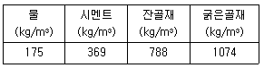
- 131.3kg/m3
- 132.3kg/m3
- 133.3kg/m3
- 134.3kg/m3
(정답률: 73%)
10. 골재에 대한 설명으로 틀린 것은?
- 골재의 실적률이란 골재의 단위용적 중의 공극의 비율을 백분율로 나타낸 것을 말한다.
- 골재의 표면수율이란 골재의 표면에 붙어있는 수량의 표면건조포화상태 골재 질량에 대한 백분율을 말한다.
- 골재의 흡수율이란 표면건조포화상태의 골재에 함유되어 있는 전체수량의 절건상태 골재 질량에 대한 백분율을 말한다.
- 골재의 절대건조상태란 골재를 100~110℃의 온도에서 일정한 질량이 될 때까지 건조하여 골재 알의 내부에 포함되어 있는 자유수가 완전히 제거된 상태이다.
(정답률: 50%)
11. 콘크리트의 배합에 사용하는 물-결합재비에 대한 설명으로 틀린 것은?
- 콘크리트의 압축강도를 기준으로 물-결합재비를 정하는 경우, 압축강도와 물-결합재비와의 관계는 시험에 의하여 정하는 것을 원칙으로 하며, 이 때 공시체는 재령 28일을 기준으로 한다.
- 제빙화학제가 사용되는 콘크리트의 물-결합재비는 45% 이하로 하여야 한다.
- 콘크리트의 수밀성을 기준으로 물-결합재비를 정할 경우, 그 값은 50% 이하로 하여야 한다.
- 콘크리트의 탄산화 저항성을 고려하여야 하는 경우 물-결합재비는 60% 이하로 하여야 한다.
(정답률: 73%)
12. 콘크리트용 잔골재의 표준입도에 대한 설명으로 틀린 것은?
- 잔골재의 입도가 표준범위를 벗어난 경우는 두 종류 이상의 잔골재를 혼합하여 입도를 조정해서 사용해야 한다.
- 연속된 두 개의 체 사이를 통과하는 양의 백분율은 45%를 넘지 않아야 한다.
- 0.3mm체와 0.15mm체를 통과한 골재량이 부족할 경우 양질의 광물질 분말을 보충한 콘크리트라 할지라도 0.3mm체와 0.15mm체통과 질량 백분율의 최소량은 감소시킬 수 없다.
- 잔골재의 조립률이 콘크리트 배합을 정할 때 가정한 잔골재의 조립률에 비해 ±0.20 이상 변화되었을 때는 배합을 변경하여야 한다.
(정답률: 55%)
13. 아래 표와 같은 조건에서 잔골재율과공기량을 구한 것으로 옳은 것은?
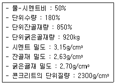
- 잔골재율 48.7%, 공기량 3.8%
- 잔골재율 48.7%, 공기량 4.2%
- 잔골재율 46.8%, 공기량 3.8%
- 잔골재율 46.8%, 공기량 4.2%
(정답률: 55%)
14. 아래 표의 데이터에 의해 굵은 골재의 표면건조 포화상태 질량(g)을 구하면?
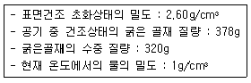
- 520g
- 550g
- 580g
- 610g
(정답률: 50%)
15. 실리카퓸을 사용한 콘크리트에 대한 설명으로 옳지 않은 것은?
- 시멘트 입자의 공극을 충전하는 마이크로 필러(Micro Filler)효과가 있다.
- 콘크리트의 미세한 공극을 감소시켜 강도증진 효과가 크다.
- 소요 공기량을 확보하기 위해서는 AE제 사용량이 증가된다.
- 실리캬퓸을 사용한 경우 콘크리트의 슬럼프가 커지므로 단위수량을 줄일 수 있다.
(정답률: 62%)
16. 콘크리트 및 모르타르 혼화재로 사용되는 실리카퓸의 품질 시험을 실시하고자 할 때 시험 모르타르는 시멘트와 실리카퓸의 질량비를 얼마로 하여야 하는가?
- 1:9
- 9:1
- 1:6
- 6:1
(정답률: 68%)
17. 굵은골재의 밀도 및 흡수율시험에서 아래 표와 같은 조건인 경우 1회 시험에 사용하는 시료의 최소질량으로 가장 적합한 것은?
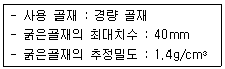
- 1.4kg
- 2.3kg
- 3.1kg
- 4.0kg
(정답률: 41%)
18. 시멘트의 강도 시험 방법(KS L ISO 679)에 대한 설명으로 틀린 것은?
- 치수 40mm×40mm×160인 각주형 공시체를 사용한다.
- 휨 강도 시험에 의해 파단된 시험체의 측면 40mm×40mm의 면적을 이용하여 압축 강도 시험은 한다.
- 압축 강도 시험에서 수동 재하의 방법으로 시험체에 하중을 가하는 경우 파괴 하중 부근에서 재하 속도가 감소하지 않게 조절하여야 한다.
- 공시체는 질량으로 시멘트 1에 대해서 물/시멘트비 0.45 및 잔골재 2.45의 비율로 모르타르를 성형한다.
(정답률: 55%)
19. KS L 5110의 시멘트 비중시험 시 광유를 사용하는 이유로 적당한 것은?
- 광유를 사용하면 시멘트의 수화반응을 억제하여 정확한 측정이 가능하다.
- 광유를 사용하면 비중병 입구에 묻은 광유를 휴지로 제거하기 용이하다.
- 광유를 사용하면 공기포 제거가 용이하다.
- 광유를 사용하면 시료를 투입할 때 막힘 현상을 방지할 수 있다.
(정답률: 62%)
20. 실제 사용한 콘크리트의 15회 시험실적으로부터 구한 압축강도의 표준편차가 2.5MPa이었다. 이 콘크리트의 설계기준압축강도가 24MPa일 때 배합강도를 구하면?
- 27.6MPa
- 27.9MPa
- 28.4MPa
- 28.9MPa
(정답률: 50%)
2과목: 제조, 시험 및 품질관리
21. 압축강도에 의한 콘크리트의 품질검사를 하는 경우에 대한 설명으로 틀린 것은? (단, 설계기준 압축강도로부터 배합을 정한 경우로서 콘크리트표준시방서의 규정에 따른다.)
- 압축강도에 의한 콘크리트의 품질검사는 일반적인 경우 재령 28일 압축강도를 통해 실시한다.
- 검사 시기 및 횟수는 1회/일, 또는 구조물의 중요도와 공사의 규모에 따라 100m3마다 1회, 배합이 변경될 때마다 실시한다.
- 설계기준 압축강도가 35MPa이하인 경우 연속 3회 시험값의 평균이 설계기준 압축강도 이상이어야 하고, 1회의 시험값이 설계시준 압축강도의 80%이상이어야 한다.
- 설계기준 압축강도가 35MPa을 초과하는 경우 연속 3회 시험값의 평균이 설계기준 압축강도 이상이어야 하고, 1회의 시험값이 설계기준 압축강도의 90% 이상이어야 한다.
(정답률: 62%)
22. 굳지 않은 콘크리트의 성질에 관한 설명 중 틀린 것은?
- 단위수량이 많고 슬럼프가 클수록 재료분리가 일어나기 쉽다.
- 레이턴스는 콘크리트 타설 후 내부의 미세한 입자가 블리딩과 함께 떠올라 콘크리트 표면에 침적된 것으로서, 부착력을 저해한다.
- 골재나 혼합수 중에 함유된 염화물은 콘크리트의 응결을 지연시킨다.
- 콘크리트 표면에서 물의 증발속도가 블리딩 속도보다 빠르면 소성수축균열이 발생하기 쉽다.
(정답률: 60%)
23. 다음의 워커빌리티 관련 시험 중 단위 수량이 매우 적은 배합의 콘크리트에 적용하는 실험실용 시험은?
- 슬럼프 시험
- VB 시험
- 다짐계수 시험
- 볼관입 시험
(정답률: 68%)
24. 콘크리트 공시체 12개의 압축강도를 측정한 결과 평균 압축강도가 27MPa이고, 변동계수가 5%였다. 이 때 압축강도의 표준편차는 얼마인가?
- 1MPa
- 1.35MPa
- 2MPa
- 2.35MPa
(정답률: 52%)
25. 관입저항침에 의한 콘크리트의 응결시간 시험(KS F 2436)에서 초결시간과 종결 시간의 결정에 대한 설명으로 옳은 것은?
- 관입 저항이 1.5MPa, 28.0MPa이 될 때의 시간을 각각 초결 시간과 종결 시간으로 결정한다.
- 관입 저항이 3.5MPa, 15.0MPa이 될 때의 시간을 각각 초결 시간과 종결 시간으로 결정한다.
- 관입 저항이 1.5MPa, 15.0MPa이 될 때의 시간을 각각 초결 시간과 종결 시간으로 결정한다.
- 관입 저항이 3.5MPa, 28.0MPa이 될 때의 시간을 각각 초결 시간과 종결 시간으로 결정한다.
(정답률: 53%)
26. 콘크리트의 체적변화에 대한 설명으로 틀린 것은?
- 콘크리트의 중성화가 진행되면 수축이 일어난다.
- 콘크리트의 온도변화에 따른 체적변화에 가장 큰 영향을 주는 것은 사용하는 골재의 암질(巖質)이다.
- 단위수량을 많이 사용한 콘크리트는 건조수축이 크다.
- 인공경량골재 콘크리트의 건조수축은 일반적으로 보통 콘크리트의 건조수축보다 매우 크다.
(정답률: 43%)
27. 레미콘 공장에서 1개월 간 출하한 호칭강도 24MPa의 콘크리트 압축강도 시험 결과, 평균값이 32MPa, 표준편차가 4MPa이었다. 콘크리트의 압축강도가 호칭강도보다 낮을 확률은? (단, 콘크리트의 압축강도는 정규 분포를 따르고, 정규편차의 정수 k 및 불량 확률 P는 아래 표를 참조)
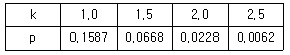
- 15.87%
- 6.68%
- 2.28%
- 0.62%
(정답률: 38%)
28. 일반콘크리트 비비기에 대한 설명으로 틀린 것은?
- 비비기 시간은 시험에 따라 정하는 것을 원칙으로 한다.
- 비비기는 미리 정해둔 비비기 시간의 2배 이상 계속하지 않아야 한다.
- 재료를 믹서에 투입하는 순서는 믹서의 형식, 비비기 시간, 골재의 종류 및 입도, 단위수량, 단위시멘트량, 혼화재료의 종류 등에 따라 다르다.
- 일반적으로 물은 다른 재료보다 먼저 넣기 시작하여 그 넣는 속도를 일정하게 유지하고, 다른 재료의 투입이 끝난 후 조금 지난 뒤에 물의 주입을 끝내도록 한다.
(정답률: 68%)
29. 레디믹스트 콘크리트의 제조설비에 대한 설명으로 틀린 것은?
- 골재 저장 설비는 콘크리트 최대 출하량의 1일분 이상에 상당하는 골재량을 저장할 수 있는 크기로 한다.
- 계량기는 서로 배합이 다른 콘크리트의 각 재료를 연속적으로 계량할 수 있어야 한다.
- 믹서는 이동식 믹서로 하여야 하며, 각 재료를 충분히 혼합시켜 균일한 상태로 배출할 수 있어야 한다.
- 콘크리트 운반차는 트럭믹서나 트럭 에지테이터를 사용한다.
(정답률: 60%)
30. 아래 표는 콘크리트의 블리딩 시험기의 제원 및 시험결과를 정리한 것이다. 블리딩률을 구하면?
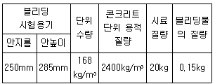
- 10.7%
- 2.5%
- 1.5%
- 0.3%
(정답률: 40%)
31. 굳지 않은 콘크리트의 워커빌리티에 영향을 미치는 요인에 대한 설명 중 옳지 않은 것은?
- 일반적으로 시멘트량이 많을수록 콘크리트는 워커블하게 된다.
- 모난 골재를 사용하면 워커빌리티가 좋아진다.
- AE제, 플라이애쉬를 사용하면 워커빌리티가 개선된다.
- 콘크리트의 온도가 높을수록 슬럼프는 감소된다.
(정답률: 59%)
32. 콘크리트의 크리프에 영향을 주는 요소에 대한 설명으로 틀린 것은?
- 재하기간 중의 대기의 습도가 낮을수록 크리프가 크다.
- 재하시의 재령이 작을수록 크리프가 크다.
- 조강 시멘트는 보통 시멘트보다 크리프가 크다.
- 시멘트량이 많을수록 크리프가 크다.
(정답률: 53%)
33. 콘크리트 제조의 품질관리를 위하여 제조공정에 있어서의 검사를 실시하고자 할 때 검사 항목에 대한 시기 및 횟수로 옳지 않은 것은?
- 잔골재의 조립률 : 1회/일 이상
- 계량설비의 계량 정밀도 : 공사시작 전 및 공사 중 1회/월 이상
- 비비기 시간 : 공사 중 적절히 실시함
- 비비기량 : 공사 중 적절히 실시함
(정답률: 44%)
34. 콘크리트 재료의 계량에 대한 설명으로 틀린 것은?
- 계량은 현장 배합에 의해 실시하는 것으로 한다.
- 각 재료는 1배치씩 질량으로 계량하는 것을 원칙으로 한다.
- 골재의 1회 계량분에 대한 허용오차는 ±3%이다.
- 혼화제의 1회 계량분에 대한 허용오차는 ±2% 이다.
(정답률: 76%)
35. 콘크리트의 물성 시험 방법 중 촉진시험이 가능하지 않은 것은?
- 크리프 시험
- 중성화 시험
- 동결융해 시험
- 염화물이온침투 시험
(정답률: 43%)
36. 블리딩에 대한 설명으로 틀린 것은?
- AE제, 감수제를 사용하면 블리딩량이 증가하는 경향이 있다.
- 블리딩이 많은 콘크리트는 침하량도 많다.
- 철근과 콘크리트의 부착을 나쁘게 한다.
- 콘크리트의 강도저하 및 구조물의 내력저하의 원인이 된다.
(정답률: 66%)
37. 콘크리트의 품질관리에 사용하는 관리도 중 계량값 관리도가 아닌 것은?
- p 관리도
- x 관리도
 -R관리도
-R관리도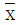
-σ관리도
(정답률: 64%)
38. 급속 동결 융해에 대한 콘크리트의 저항 시험에 관한 설명으로 틀린 것은?
- 동결 융해 1사이클은 공시체 중심부의 온도를 원칙으로 하며 원칙적으로 4℃에서 -18℃떨어지고, 다음에 -18℃에서 4℃로 상승되는 것으로 한다.
- 동결 융해 1사이클의 소요 시간은 2시간이상, 4시간 이하로 한다.
- 일반적으로 동결 융해에서 상태가 바뀌는 순간의 시간이 10분을 초과해서는 안된다.
- 공시체의 중심과 표면의 온도차는 항상 20℃를 초과해서는 안된다.
(정답률: 52%)
39. 콘크리트의 슬럼프시험방법에 대한 설명으로 틀린 것은?
- 슬럼프콘은 상부 안지름 100mm, 하부 안지름 200mm, 높이 300mm의 강제 콘을 사용한다.
- 시료는 슬럼프콘 용적의 1/3씩 3층으로 나누어 채운다.
- 슬럼프콘에 콘크리트를 채우기 시작하고 나서 슬럼프콘의 들어올리기를 종료할 때까지의 시간은 1분 30초 이내로 한다.
- 슬럼프콘을 연직으로 들어 올리고 콘크리트 중앙부에서 공시체 높이와의 차를 5mm단위로 측정하여 이것을 슬럼프 값으로 한다.
(정답률: 64%)
40. 콘크리트 휨강도 시험용 공시체를 3등분 재하장치로 시험하였더니, 최대하중 35kN에서 지간의 가운데 부분에서 파괴되었다. 이 콘크리트의 휨강도는 얼마인가? (단, 공시체의 크기는 150×150×530mm이며, 지간은 450mm)
- 4.67MPa
- 4.23MPa
- 4.01MPa
- 3.69MPa
(정답률: 50%)
3과목: 콘크리트의 시공
41. 일반 콘크리트의 다지기에 대한 설명으로 옳지 않은 것은?
- 콘크리트는 타설 직후 바로 충분히 다져서, 콘크리트가 철근 및 매설물 주위와 거푸집의 구석구석까지 잘 채워 밀실한 콘크리트가 되도록 한다.
- 재진동을 할 경우에는 콘크리트에 나쁜 영향이 생기지 않도록 초결이 일어난 후에 실시하여야 한다.
- 내부진동기는 콘크리트부터 천천히 빼내어 구멍이 남지 않도록 하여야 한다.
- 진동다지기를 할 때에는 내부진동기를 아래층의 콘크리트 속으로 0.1m 정도 찔러 넣어야 한다.
(정답률: 72%)
42. 서중콘크리트에 대한 설명으로 틀린 것은?
- 물-결합재비를 작게 하기 위하여 단위 시멘트량을 많게 하여야 한다.
- 서중콘크리트의 배합온도는 낮게 관리하여야 한다.
- 콘크리트를 타설하기 전에는 지반, 거푸집 등 콘크리트로부터 물을 흡수할 우려가 있는 부분을 습윤상태로 유지하여야 한다.
- 콘크리트는 비빈 후 즉시 타설하여야 하며, 일반적인 대책을 강구한 경우라도 1.5시간 이내에 타설하여야 한다.
(정답률: 59%)
43. 콘크리트 타설 후 양생에 관한 주의사항에 대한 설명으로 틀린 것은?
- 일평균 기온이 15℃이상이고 보통 포틀랜드 시멘트를 사용한 콘크리트의 경우 습윤양생 기간은 5일을 표준으로 한다.
- 막 양생제는 콘크리트 표면의 물빛(水光)이 없어진 직후에 살포하며, 방향을 바꾸어 2회 이상 실시한다.
- 온도제어양생을 실시한 경우에는 부재의 크기가 크고 온도상승이 큰 경우 파이프쿨링이나 표면보온을 병용한 온도제어 양생을 실시한다.
- 플라이애쉬를 사용한 경우 온도에 민감하므로 저온시에도 보통포틀랜드 시멘트보다 양생기간을 짧게 한다.
(정답률: 62%)
44. 콘크리트 운반 및 타설에 대한 설명으로 옳은 것은?
- 비비기로부터 타설이 끝날 때까지의 시간은 외기온도 25℃이상의 경우 2시간을 넘어서는 안된다.
- 넓은 장소에서는 일반적으로 콘크리트 공급원으로부터 먼 쪽에서 시작하여 가까운 쪽으로 타설되도록 계획을 수립한다.
- 슬럼프 값이 작을수록, 수송관의 직경이 작을수록, 토출량이 많을수록 콘크리트 펌프 수송관의 1m당 관 내 압력손실이 작아진다.
- 굵은골재 최대 치수 25mm를 사용한 경우 콘크리트 펌프 수송관의 최소 호칭치수는 150mm 이상이어야 한다.
(정답률: 57%)
45. 고강도콘크리트에 대한 설명 중 옳지 않은 것은?
- 단위시멘트량은 소요의 워커빌리티 및 강도를 얻을 수 있는 범위 내에서 가능한 적게 한다.
- 콘크리트 타설 낙하고는 1m 이하로 하는 것이 좋다.
- 물-결합재비는 50%이하, 단위수량은 200kg/m3이하로 한다.
- 충분한 수화작용을 할 수 있도록 직사광선에 노출시키거나 바람에 수분이 증발되지 않도록 주의한다.
(정답률: 45%)
46. 일반 콘크리트를 2층 이상으로 나누어 타설할 경우, 외기온이 25℃ 초과할 때 이어치기 허용시간 간격의 표준으로 옳은 것은?
- 1시간
- 1시간 30분
- 2시간
- 2시간 30분
(정답률: 56%)
47. 수밀콘크리트의 배합에 대한 설명으로 옳은 것은?
- 단위수량 및 물-결합재 비는 되도록 크게 한다.
- 콘크리트의 소요 슬럼프는 되도록 적게 하여 180mm를 넘지 않도록 한다.
- 워커빌리티를 개선시키기 위해 AE제, AE감수제 등을 사용하는 경우라도 공기량은 6% 이하가 되도록 한다.
- 단위 굵은 골재량은 되도록 작게 한다.
(정답률: 30%)
48. 매스 콘크리트에 대한 일반적인 설명으로 틀린 것은?
- 굵은 골재의 최대 치수는 작업성이나 건조수축 등을 고려하여 되도록 작은 값을 사용하여야 한다.
- 고로 슬래그 미분말을 혼입하는 경우 슬래그는 온도 의존성이 크기 때문에 콘크리트의 타설온도가 높아지면 슬래그를 사용하지 않는 경우보다 발열량이 증가하여, 오히려 콘크리트 온도가 상승하는 경우도 있다.
- 매스 콘크리트의 온도균열은 콘크리트 내부와 표면부의 온도 차이가 커지는 경우에 많이 발생하므로, 거푸집은 온도 차이를 줄일 수 있도록 보온성이 좋은 것을 사용하고 존치기간을 길게 하여야 한다.
- 매스 콘크리트의 타설온도는 온도균열을 제어하기 위한 관점에서 가능한 한 낮게 하여야 한다.
(정답률: 35%)
49. 다음 중 촉진양생 방법에 속하지 않는 것은?
- 증기양생
- 습윤양생
- 전기양생
- 오토클레이브양생
(정답률: 66%)
50. 고강도 콘크리트용 굵은골재의 품질기준으로서 실적률은 최소 얼마 이상이어야 하는가?
- 50% 이상
- 53% 이상
- 59% 이상
- 63% 이상
(정답률: 41%)
51. 하절기 콘크리트의 문제점을 보완하는 내용과 관계가 먼 것은?
- 거푸집의 측면은 브레이싱으로 저판에 지지되어야 하고, 이 때 저판에서의 브레이싱 지지점은 측면으로부터 높이의 3분의 1지점으로 하여야 한다.
- 거푸집은 콘크리트를 치기 전에 깨끗이 닦고 유지류를 발라두어야 한다.
- 거푸집은 윗면의 높이 변화가 길이 3m 당 3mm이하이어야 하며, 측면의 변화는 6mm 이하이어야 한다.
- 곡선반경 50m 이하의 곡선부에는 목재거푸집을 사용할 수 있으며, 600mm마다 강재 지지말뚝을 설치하여야 한다.
(정답률: 45%)
52. 연직시공이음에 대한 설명으로 틀린 것은?
- 구 콘크리트의 시공이음면은 쇠솔이나 쪼아내기 등에 의해 거칠게 한다.
- 이음을 좋게 하기 위해 구 콘크리트의 시공이음면에 시멘트 페이스트, 모르타르, 습윤면용 에폭시수지 등을 바른다.
- 시공이음면의 거푸집으로 설치되는 철망은 철근 등으로 지지시키는 것이 좋다.
- 시공이음부의 거푸집제거 시기는 콘크리트 타설 후 여름에는 10~15시간 정도로 한다.
(정답률: 63%)
53. 수중콘크리트에 대한 설명으로 틀린 것은?
- 일반 수중콘크리트의 물-결합재비는 55%이하, 단위시멘트량은 350kg/m3이상으로 한다.
- 일반 수중콘크리트 수중에서 시공할 때의 강도가 표준공시체 상도의 0.6~0.8배가 되도록 배합강도를 설정하여야 한다.
- 지하연속벽에 사용하는 수중콘크리트의 경우, 지하연속벽을 가설만으로 이용할 경우에는 단위시멘트량은 300kg/m3이상으로 하여야 한다.
- 수중콘크리트 타설 시 완전히 물막이를 할 수 없을 경우에는 유속은 1초간 50mm 이하로 하여야 한다.
(정답률: 42%)
54. 숏크리트에 대한 설명으로 틀린 것은?
- 일반 숏크리트의 장기 설계기준 압축강도는 재령 28일로 설정한다.
- 습식 숏크리트는 배치 후 60분 이내에 뿜어 붙이기를 실시하여야 한다.
- 숏크리트의 초기강도는 재령 3시간에 1.0~3.0MPa을 표준으로 한다.
- 굵은골재의 최대치수는 25mm의 것이 널리 쓰인다.
(정답률: 46%)
55. 숏크리트의 리바운드량을 저감시키는 방법으로 틀린 것은?
- 굵은 골재 최대치수를 작게 한다.
- 단위시멘트량을 크게 한다.
- 호스의 압력을 일정하게 유지한다.
- 벽면과 평행한 방향으로 분사시킨다.
(정답률: 56%)
56. 팽창콘크리트의 시공에 관한 설명으로 틀린 것은?
- 제조 시 포대 팽창재를 사용하는 경우에는 포대수로 계산해도 되나. 1포대 미만의 것을 사용하는 경우에는 반드시 질량으로 계량하여야 한다.
- 팽창재는 원칙적으로 다른 재료를 투입함과 동시에 믹서에 투입한다.
- 한중콘크리트의 경우 타설할 때의 콘크리트 온도는 10℃이상, 20℃미만으로 한다.
- 팽창 콘크리트의 비비기 시간은 강제식 믹서를 사용하는 경우는 2분이상으로 하여야 한다.
(정답률: 59%)
57. 콘크리트제품의 증기양생 방법에 대한 일반적인 설명으로 틀린 것은?
- 거푸집과 함께 증기양생실에 넣어 양생온도를 균등하게 올린다.
- 비빈 후 2~3시간 이상 경과된 후에 증기양생을 실시한다.
- 온도상승속도는 1시간당 60℃이하로 하고 최고온도는 200℃로 한다.
- 양생실의 온도는 서서히 내려 외기의 온도와 큰 차가 없도록 하고나서 제품을 꺼낸다.
(정답률: 67%)
58. 무근 시멘트 콘크리트 포장 배합시 플라이애쉬를 20% 첨가하였을 때의 설명으로 틀린 것은?
- 알칼리-실리카 반응이 억제되어 콘크리트 내구성이 우수하다.
- 콘크리트 장기 강도가 증대된다.
- 콘크리트 초기 강도 증대로 한중콘크리트 타설 시 적절하다.
- 플라이애쉬 첨가로 인해 경제성이 우수하다.
(정답률: 50%)
59. 고유동 콘크리트의 품질기준에 대한 아래 표의 설명에서 ()안에 들어갈 숫자로서 옳은 것은?
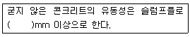
- 400
- 500
- 600
- 700
(정답률: 64%)
60. 해양 콘크리트에 대한 설명으로 틀린 것은?
- 해양 콘크리트 구조물에 쓰이는 콘크리트의 설계기준강도는 28Ma이다.
- 시멘트는 해수의 작용에 대하여 특히 내구적이어야 하므로 고로 슬래그 시멘트, 플라이 애쉬 시멘트 등 혼합시멘트계 및 중용열 포틀랜드 시멘트를 사용하여야 한다.
- 강재의 방식을 위한 방법으로는 콘크리트 피복두께를 크게 하는 것, 균열폭을 적게 하는 것, 적절한 재료와 시공방법을 사용하는 것 등이 있다.
- 해수는 알칼리 골재반응의 반응성을 촉진하는 경우가 있으므로 이에 대한 충분한 검토를 하여야 한다.
(정답률: 62%)
4과목: 구조 및 유지관리
61. 고정하중 20kN/m, 활하중 25kN/m의 등분포하중을 받는 경간 8m의 단순보에 작용하는 최대계수휨모멘트(Mu)를 구하면? (단, 하중계수와 하중조합을 고려하여 구할 것)
- 479kNㆍm
- 512kNㆍm
- 5484kNㆍm
- 579kNㆍm
(정답률: 45%)
62. 철근콘크리트에서 스터럽과 굽힘철근을 배근하는 주된 목적은?
- 압축측의 좌굴을 방지하기 위하여
- 콘크리트의 휨에 의한 인장강도가 부족하기 때문에
- 보에 작용하는 사인장응력에 의한 균열을 막기 위하여
- 균열 후 그 균열에 대한 증대를 방지하기 위하여
(정답률: 58%)
63. 전체면에 그물눈 모양으로 발생하는 콘크리트 균열 영상은 주로 어떤 상황에서 발생하는가?
- 장기간 비비기
- 급속한 타설
- 불충분한 다짐
- 지보공의 침하
(정답률: 34%)
64. fck=27MPa, fu=400MPa로 된 보에서 표준갈고리가 있는 인장 이형철근의 기본정착길이는? (단, 사용 철근은 D25(철근의 공칭지름은 25.4mm)이고, 도막되지 않은 철근이며, 보통 중량 콘크리트이다.)
- 420mm
- 440mm
- 470mm
- 500mm
(정답률: 38%)
65. 그림과 같은 복철근 직사각형보의 공칭휨강도(Mn는? (단, fck=21MPam fu=300MPa이다.)
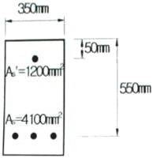
- 450.28kNㆍm
- 597.92kNㆍm
- 627.47kNㆍm
- 685.62kNㆍm
(정답률: 42%)
66. 철근의 부식상태 조사방법 중 자연전위법에 대한 설명으로 틀린 것은?
- 피복콘크리트의 전기저항을 측정함으로ㅆ 그 부식성 및 철근의 부식속도에 관계하는 정보를 얻을 수 있으며, 일반적으로 4점 전극법을 사용한다.
- 콘크리트 표면이 건조한 경우에는 물을 뿌려 표면을 습윤상태로 만든 후 전위측정을 한다.
- 자연전위(E)가 -350mV이하이면 90%이상의 확률로 부식이 있다.
- 염화물의 침투와 중성자로 철근이 활성태로 되어 부식이 진행되면 그 전위는 마이너스(-) 방향으로 변화한다.
(정답률: 53%)
67. 강도설계법에서 아래의 T형보의 압축연단에서 중립축까지의 거리 c는 약 얼마인가? (단, fcx=30MPa, fu=300MPa, As=3500mm2)
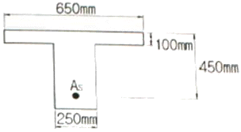
- 56mm
- 76mm
- 96mm
- 116mm
(정답률: 50%)
68. 연속섬유 시트접착공법의 장점으로 옳지 않은 것은?
- 내식성이 우수하고, 염해지역의 콘크리트구조물 보강에도 적용할 수 있다.
- 다른 보강공법과 비교하여 단면강성의 증가가 크다.
- 일정한 격자모양으로 부착함으로써 발생된 균열의 진전상태 관찰이 가능하다.
- 작업공간이 한정된 장소에서는 작업이 편리하다.
(정답률: 49%)
69. 콘크리트구조기준에서 규정하고 있는 철근의 간격에 대한 설명 중 옳은 것은?
- 벽체 또는 슬래브에서 휨 주철근의 간격은 벽체나 슬래브 두께의 4배 이하로 하여야 하고, 또한 250mm이하로 하여야 한다.
- 동일 평면에서 평행한 철근 사이의 수평 순간격은 30mm 이상, 굵은 골재 최대 치수 이상 또한 철근의 공칭지름 이상으로 하여야 한다.
- 나선철근과 띠철근 기둥에서 축방향 철근의 순간격은 30mm이상, 철근 공칭지름 이상 또한 굵은 골재 최대치수의 1.5배 이상으로 하여야 한다.
- 상단과 하단에 2단 이상으로 배치된 경우 상하 철근의 순간격은 25mm 이상으로 하여야 한다.
(정답률: 35%)
70. 확대머리 이형철근의 인장에 대한 정착길이는 아래의 표와 같은 공식으로 구할 수 있다. 이래의 식을 적용하기 위해 만족하여야 할 조건에 대한 설명으로 틀린 것은?
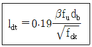
- 철근의 설계기준항복강도는 400MPa이하이어야 한다.
- 콘크리트의 설계기준압축강도는 40MPa이하이어야 한다.
- 철근의 지름은 40mm 이하이어야 한다.
- 보통중량콘크리트를 사용한다.
(정답률: 42%)
71. 아래의 표에서 설명하는 비파괴시험방법은?
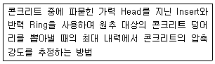
- RC-Radar Test
- BS Test
- Tc-To Test
- Pull-out Test
(정답률: 59%)
72. 다음 그림과 같은 조건에서 초음파법에 의해 측정한 균열깊이(d)는 얼마인가? (단, Tc-To법을 사용하며, 측정한 Tc=240μs, To=120μs이고 Tc는 수진자와 발진자를 균열을 중심으로 하여 등 간격(L/2)으로 배치한 경우의 전파시간이며, To는 균열이 없는 근방의 거리(L)에서의 전파시간을 나타낸다.)
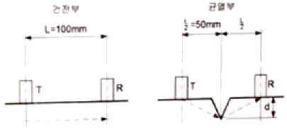
- 72.6mm
- 78.6mm
- 86.6mm
- 92.6mm
(정답률: 46%)
73. 철근콘크리트 부재의 강도설계법시 기본가정에 대한 설명 중 옳지 않은 것은?
- 콘크리트의 인장강도는 휨계산에서 고려한다.
- 항복강도 fu이하에서 철근의 응력은 그 변형률의 Es배로 본다.
- 압축 측연단에서 콘크리트의 극한 변형률은 0.003으로 가정한다.
- 철근 및 콘크리트의 변형률은 중립축으로부터의 거리에 비례한다.
(정답률: 48%)
74. 콘크리트가 굳고 난 후에 발생하는 균열의 종류가 아닌 것은?
- 철근의 부식으로 인한 균열
- 화학적 반응으로 인하 균열
- 건조수축으로 인한 균열
- 침하 균열
(정답률: 40%)
75. 염화물 침투에 따른 철근 부식으로 발생하는 균열을 억제하기 위한 방법으로 적절하지 못한 것은?
- 밀실한 콘크리트 시공
- 자알칼리 시멘트 사용
- 충분한 피복두께 확보
- 에폭시수지 도포 철근 사용
(정답률: 56%)
76. 단면이 500mm×500mm인 사각형이고 종발향철근의 전체단면적(Ast)의 4500mm2인 중심축하중을 받는 띠철근 단주의 설계축하중강도(øPn)는? (단, fck=27MPam, fu=400MPa이다.)
- 2987kN
- 3866kN
- 4163kN
- 4754kN
(정답률: 44%)
77. 기둥에서 축방향 철근량의 최소한계를 두는 이유로 잘못된 설명은?
- 휨강도보다는 압축단면을 보강하기 위해서
- 시공 시 재료분리로 인한 부분적 결함을 보완하기 위해서
- 콘크리트 크리프 및 건조수축의 영향을 감소시키기 위해서
- 예상 외의 편심하중이 작용할 가능성에 대비하기 위해서
(정답률: 39%)
78. 주입공법의 종류 중 저압, 지속식 주입공법에 대한 내용으로 잘못된 것은?
- 저압이므로 주입기에 여분의 주입재료가 남지 않아 재료의 손실이 없다.
- 저압이므로 실(seal)부의 파손도 작고 정확성이 높아 시공관리가 용이하다.
- 주입되는 수지는 다양한 점도의 것을 사용할 수 있다.
- 주입되는 수지의 양을 관찰하기 용이하므로 주입상황을 비교적 정확하게 파악할 수 있다.
(정답률: 66%)
79. 단위시멘트량이 300kg/m3인 콘크리트에서 철근부식을 일으키는 임계염화물이온 농도(Clim)는? (단, 콘크리트 표준시방서 내구성 편을 따르며, 혼화재를 사용하지 않은 콘크리트이다.)
- 1.6kg/m3
- 1.5kg/m3
- 1.4kg/m3
- 1.2kg/m3
(정답률: 38%)
80. 바닥 슬래브 보강용으로 적합하지 않는 공법은?
- 보의 증설
- 강판 접착
- 강판 라이닝 보강
- 탄소 섬유시트 접착
(정답률: 55%)